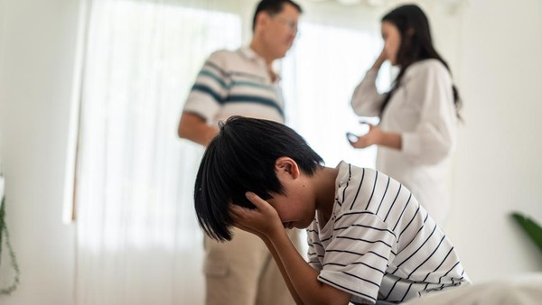

Jenis Hak Asuh Anak dalam Perceraian: Apa Saja Pilihannya?

Perceraian adalah keputusan yang tidak mudah, terutama jika pasangan sudah memiliki anak. Salah satu aspek terpenting yang harus dipertimbangkan dalam proses perceraian adalah hak asuh anak. Siapa yang akan merawat dan membesarkan anak-anak setelah orang tua mereka berpisah? Pengadilan akan memutuskan hal ini berdasarkan beberapa faktor penting untuk memastikan kesejahteraan dan hak anak tetap terlindungi.
Secara umum, ada dua jenis hak asuh anak yang paling sering dibahas dalam kasus perceraian, yaitu hak asuh penuh (sole custody) dan hak asuh bersama (joint custody). Masing-masing memiliki kelebihan dan kekurangan, dan keputusan pengadilan akan sangat bergantung pada sejumlah pertimbangan yang lebih kompleks. Dalam artikel ini, kita akan membahas secara mendalam perbedaan antara kedua jenis hak asuh ini, serta faktor-faktor yang mempengaruhi keputusan pengadilan.
1. Hak Asuh Penuh (Sole Custody)
Hak asuh penuh berarti bahwa satu orang tua diberikan hak eksklusif untuk merawat dan membuat keputusan terkait kehidupan anak, baik dalam hal pendidikan, kesehatan, tempat tinggal, dan kegiatan sehari-hari. Meskipun orang tua yang mendapatkan hak asuh penuh memiliki otoritas penuh, pihak orang tua yang tidak diberikan hak asuh tetap memiliki hak untuk mengajukan kunjungan atau bahkan untuk terlibat dalam keputusan-keputusan besar yang memengaruhi anak, seperti pemindahan tempat tinggal atau keputusan medis yang penting.
Kelebihan Hak Asuh Penuh:
Konsistensi dan Stabilitas: Anak akan tinggal bersama satu orang tua, yang dapat menciptakan rutinitas yang lebih stabil dan konsisten dalam kehidupan sehari-hari mereka.
Kepastian dalam Pengambilan Keputusan: Ketika hanya satu orang tua yang memiliki hak asuh, pengambilan keputusan mengenai anak bisa lebih cepat dan tidak melibatkan perselisihan antara orang tua.
Kemudahan dalam Mengelola Akomodasi Anak: Orang tua dengan hak asuh penuh memiliki kebebasan lebih besar dalam menentukan tempat tinggal anak dan mengelola kegiatan sehari-hari mereka tanpa harus bernegosiasi dengan pihak lain.
Kekurangan Hak Asuh Penuh:
Keterbatasan Hubungan dengan Orang Tua yang Tidak Mendapatkan Hak Asuh: Anak mungkin mengalami kesulitan dalam menjaga hubungan dengan orang tua yang tidak diberikan hak asuh penuh, yang dapat mempengaruhi kedekatan emosional mereka.
Potensi Ketegangan Antar Orang Tua: Jika salah satu orang tua merasa diabaikan atau tidak diberi kesempatan untuk berperan dalam kehidupan anak, ini dapat memicu ketegangan atau bahkan konflik yang berkelanjutan.
2. Hak Asuh Bersama (Joint Custody)
Hak asuh bersama berarti bahwa kedua orang tua memiliki hak yang sama dalam merawat anak dan membuat keputusan besar yang berkaitan dengan kehidupan anak. Dalam jenis hak asuh ini, anak biasanya tinggal di dua tempat, yaitu di rumah orang tua yang satu dan orang tua yang lain, dengan pengaturan yang disepakati oleh kedua belah pihak. Pengaturan ini bisa berupa penjadwalan waktu tinggal atau bahkan pembagian tanggung jawab dalam keputusan besar terkait anak.
Kelebihan Hak Asuh Bersama:
Peluang untuk Mempertahankan Kedua Hubungan: Anak dapat memiliki hubungan yang lebih dekat dengan kedua orang tua, yang sangat penting untuk perkembangan emosional mereka.
Keadilan dalam Pembagian Waktu: Kedua orang tua memiliki kesempatan yang sama untuk berperan dalam kehidupan anak, baik dalam hal pengasuhan sehari-hari maupun pengambilan keputusan besar.
Mengurangi Perasaan Terpisah: Dengan hak asuh bersama, anak mungkin merasa tidak ada pihak yang lebih dominan atau lebih terabaikan, yang bisa mengurangi perasaan terisolasi setelah perceraian orang tua.
Kekurangan Hak Asuh Bersama:
Membutuhkan Kerjasama yang Baik: Agar hak asuh bersama berjalan lancar, kedua orang tua harus dapat bekerja sama dengan baik. Jika kedua orang tua tidak dapat berkomunikasi secara efektif atau sering bertengkar, maka hak asuh bersama bisa menambah stres bagi anak.
Kompleksitas dalam Pengaturan Waktu: Pembagian waktu yang adil antara kedua orang tua bisa sangat rumit, terutama jika keduanya tinggal jauh satu sama lain atau memiliki jadwal yang padat.
Potensi Ketidaksetujuan dalam Pengambilan Keputusan: Terkadang, orang tua yang terlibat dalam hak asuh bersama bisa memiliki perbedaan pendapat yang cukup besar terkait keputusan besar dalam hidup anak, seperti masalah pendidikan, medis, atau tempat tinggal.
Faktor yang Mempengaruhi Keputusan Pengadilan
Pengadilan akan memutuskan jenis hak asuh yang sesuai dengan kebutuhan anak berdasarkan beberapa faktor utama. Meskipun tidak ada aturan yang kaku, berikut adalah beberapa faktor yang biasanya diperhatikan:
Kesejahteraan Anak: Prioritas utama pengadilan adalah kesejahteraan anak. Pengadilan akan mempertimbangkan siapa yang paling mampu memberikan lingkungan yang aman, stabil, dan mendukung perkembangan anak.
Kemampuan Orang Tua: Pengadilan juga akan mempertimbangkan kemampuan orang tua dalam memberikan perhatian yang cukup kepada anak, baik dari segi emosional maupun finansial. Jika salah satu orang tua terbukti tidak mampu merawat anak dengan baik, hal ini dapat mempengaruhi keputusan hak asuh.
Keterlibatan Orang Tua dalam Kehidupan Anak: Jika salah satu orang tua sudah terlibat aktif dalam kehidupan anak, baik dalam hal pendidikan maupun kegiatan sehari-hari, hal ini akan menjadi pertimbangan penting bagi pengadilan.
Keinginan Anak (Jika Usia Memungkinkan): Beberapa pengadilan mungkin mempertimbangkan keinginan anak, terutama jika anak sudah cukup dewasa untuk membuat keputusan berdasarkan pemahaman mereka sendiri.
Kesimpulan
Menentukan jenis hak asuh anak yang terbaik pasca perceraian bukanlah keputusan yang mudah. Baik hak asuh penuh maupun hak asuh bersama memiliki kelebihan dan kekurangan masing-masing, dan pengadilan akan memilih opsi yang paling mengutamakan kesejahteraan anak. Bagi orang tua yang berpisah, penting untuk memiliki pemahaman yang jelas tentang pilihan ini dan mempertimbangkan berbagai faktor yang dapat memengaruhi masa depan anak mereka.
Jika Anda tengah menghadapi masalah perceraian dan hak asuh anak, disarankan untuk berkonsultasi dengan pengacara keluarga yang berpengalaman untuk mendapatkan saran hukum yang sesuai dengan situasi Anda. Pengacara atau mediator dapat membantu Anda memahami proses ini dan memberikan solusi terbaik untuk anak-anak Anda.
Dengan artikel ini, diharapkan pembaca dapat lebih memahami perbedaan antara hak asuh penuh dan hak asuh bersama, serta bagaimana pengadilan mempertimbangkan faktor-faktor penting dalam menentukan siapa yang akan diberikan hak asuh anak setelah perceraian. Jika butuh bantuan konsultasikan kepada kami gratis lewat WA di 081330723891 Atau 081330723891